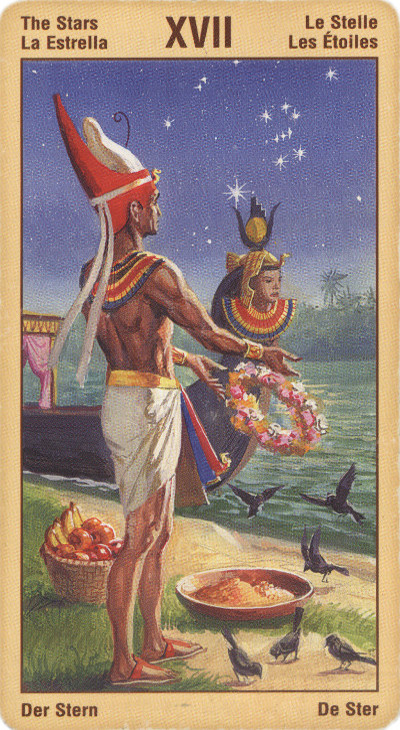

Звезда
Смысл карты: ты пытался обрести гармонию с окружающим миром, был готов поделиться всем, что имеешь – и убедился, что это никому не нужно. Но не отчаивайся! Продолжай помогать другим, потому что силы у тебя не убудет: что ты отдал, то останется твоим. Лишь то, что ты утаил, пропадет навсегда.
Значение: В раскладе она может означать несколько вещей. Человеку отчаявшемуся, расстроенному чем-то она советует верить в свою звезду и следовать ей. В чисто житейских ситуациях может символизировать “свет в конце тоннеля”, скорое улучшение ситуации. Ее можно истолковать и как ожидающую человека награду – вознаграждение за самоотверженный труд, за перенесенные страдания, за добрый поступок. На бытовом уровне это может быть награда в буквальном смысле (орден), для военного – повышение в звании (новая звездочка на погонах).
Выпадая в раскладе, эта карта указывает на яркие перспективы и свидетельствует о том, что вы развиваете в себе спокойную и ясную веру в будущее. Если вы нуждаетесь в исцелении, то эта карта - чрезвычайно благоприятное предзнаменование, для вас может оказаться полезным регулярно настраиваться на ее яркую, но спокойную энергию. Как правило. Звезда означает не какие-то внешние события, но чувство положительной самооценки, благополучия и жизненной энергии. Вода символизирует подсознание, поэтому не исключено, что вас постигнет особое вдохновение. Она также символизирует любовь и может указывать на то, что в данное время вы получаете много любви. Любовь, вода, жизнь, красота звезд, а также простота, естественность, свобода и неподдельность, символом которых выступает нагота - все эти качества описываются Звездой.
Звезда - это карта надежды, мудрости и понимания высших взаимосвязей всего. Она указывает, что мы в данный момент делаем или планируем вещи, результаты которых проявятся лишь в весьма отдаленном будущем, однако именно поэтому мы можем до конца и не сознавать, что делаем. Лишь задним числом нам станет понятно, какие знаменательные решения были нами приняты тогда (сегодня), под знаком Аркана Звезды. И, как семени нужно время, чтобы прорасти и стать растением, так и Звезда проявляет свое плодотворное действие далеко не сразу.
В прямом положении карта звезда означает прилив творческих сил, вдохновение, новые идеи. Вы знаете, что собираетесь сказать или создать, вы испытываете чувство покоя, верите в свои силы и сможете решить все свои проблемы. ваше самочувствие, как физическое, так и психическое, улучшается. У вас оптимистический взгляд на жизнь и хорошие, вполне осуществимые планы. Эту карту, кроме того, можно трактовать и как неожиданную помощь, нового друга, новую любовь.
Надежда, просвящение, счастье, воплощение мечты в реальность, творчество.
Иммитационная магия - помните: подобное притягивается подобным.
В отрицательном значении: разочарование, нетерпение, воровство.
Несбывшиеся надежды, отверженность. Эмоциональная опустошенность.
Аркан «Звезда», выпавший вам в личном раскладе, означает, что вы - человек творческий и обаятельный. Первое помогает вам создавать и воплощать в жизнь свои идеи, второе позволяет выстраивать гармоничные отношения с окружающими. За какое бы дело вы ни взялись, оно, как правило, заканчивается успешно.
Ваш характер выручает вас и в трудных жизненных обстоятельствах: даже если в какой-то момент вступаете в «полосу неудач», никогда не теряете оптимизма и веры в лучшее будущее. И на самом деле, в скором времени все вновь приходит в норму, и ваша жизнь по-прежнему течет среди удач и достижений.
В раскладе на ситуацию «Звезда» обычно означает положительное решение вопроса и указывает, что вы, без сомнения, достигнете желаемого. Данная карта призывает вас не терять веру в свои силы, отметать прочь сомнения и уныние и ни в коем случае не бросать начатое на полпути.
Тем, кого беспокоит вопрос здоровья, также следует положиться на судьбу: она будет к вам поистине благосклонна. Если вы уже больны, то вскоре обязательно выздоровеете, новые же болезни вам в ближайшем будущем просто не грозят!
В перевернутом виде перспектива не столь благоприятна: скорого улучшения ситуации ожидать не приходится, награды тоже. Совет же, который дает эта карта, заключается в единении с Космосом, в достижении внутренней гармонии и мира с самим собой. На практике это может означать рекомендацию обратиться к одной из гармонизирующих техник – ушу, цигун, рейки и т.д.
Что касается бизнесменов, то вообще-то это не их карта; но если уж она выпала, то совет: либо немедленно заняться обеспечением себе места в Госдуме (парламенте области, городской мэрии, сельсовете), либо же сделать ставку на благотворительность – жертвовать как можно больше на церковь, детские больницы, школы и т.п., по крайней мере в течение ближайших шести месяцев.
В перевернутом положении карта может говорить о том, что вы, возможно, хотите сделать карьеру на поприще искусства или в любой другой сфере, требующей творческого подхода. В определенных случаях может означать упрямство, неуступчивость, нежелание изменить что-либо в жизни, утраченные шансы и неиспользованные возможности. Может говорить также - неверие в свои силы, пессимизм, негативное отношение к людям и событиям, лень, вялость, медлительность, равнодушие.